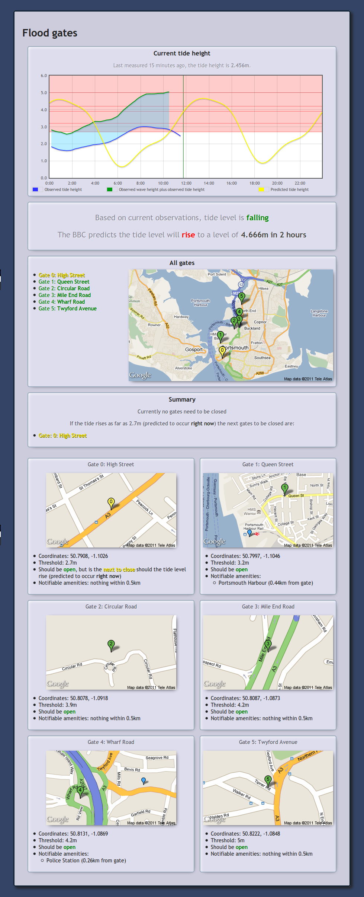

As an example of using the HLAPI this section describes how a "flood gate status" mashup application was built.
The purpose of this mashup is to take tide and wave height data from the HLAPI for an area as well as predicted tide height data from another source. These are then plotted on a graph. Then, given data on the locations of flood gates and their tide level thresholds, give information on which gates should be closed, which should be next to close (and in how long that should happen) and so on.
This example uses the PHP scripting language. For Sparql queries and RDF manipulation it uses the Arc2 library and, for ease of coding and readability, Graphite. The Flot Javascript library (a Jquery plugin) is used for charts and the Google Static Maps API for mapping.
Another useful tool is an RDF browser such as the Q&D RDF Browser.
First we load in the Arc2 and Graphite libraries and set up Graphite with a list of namespaces for coding simplicity.
require_once "arc/ARC2.php";
require_once "Graphite.php";
$graph = new Graphite();
$graph->ns("id-semsorgrid", "http://id.semsorgrid.ecs.soton.ac.uk/");
$graph->ns("ssn", "http://purl.oclc.org/NET/ssnx/ssn#");
$graph->ns("DUL", "http://www.loa-cnr.it/ontologies/DUL.owl#");
$graph->ns("time", "http://www.w3.org/2006/time#");
This continues for other useful namespace prefixes. The id-semsorgrid prefix
is added for further code brevity.
In the case of the CCO deployment, the current day's tide height readings for the Portsmouth sensor are identified by
http://id.semsorgrid.ecs.soton.ac.uk/observations/cco/portsmouth/TideHeight/latest
This is a lie -- that sensor doesn't exist. In the demo I'm using `arunplatform_tide`, not `portsmouth`.
We can direct Graphite to load the resources into a graph -- Graphite and the HLAPI will automatically negotiate a content type which can be used. We're using the namespace we defined above for brevity.
$graph->load("id-semsorgrid:observations/cco/portsmouth/TideHeight/latest");
The same lie again.
Graphite allows the graph to be rendered directly as HTML to quickly visualize what is available, the same can be achieved by using a dedicated RDF browser.
echo $graph->dump();
The beginning of the output is something like the following:
id-semsorgrid:observations/cco/portsmouth/TideHeight/20110101
-> rdf:type -> DUL:Collection
-> DUL:hasMember -> id-semsorgrid:observations/cco/portsmouth/TideHeight/20110101#084300,
-> id-semsorgrid:observations/cco/portsmouth/TideHeight/20110101#134300,
-> id-semsorgrid:observations/cco/portsmouth/TideHeight/20110101#192301
id-semsorgrid:observations/cco/portsmouth/TideHeight/20110101#084300
-> rdf:type -> ssn:Observation
-> ssn:featureOfInterest -> http://www.eionet.europa.eu/gemet/concept?cp=7495
-> ssn:observationResultTime -> _arcc478b1
-> ssn:observedProperty -> http://www.semsorgrid4env.eu/ontologies/CoastalDefences.owl#TideHeight
-> ssn:observationResult -> _:arcc478b2
-> ssn:observedBy -> id-semsorgrid:sensors/cco/portsmouth
-> DUL:directlyFollows -> id-semsorgrid:observations/cco/portsmouth/TideHeight/20110101#083300
-> DUL:isMemberOf -> id-semsorgrid:observations/cco/TideHeight/20110101
-> DUL:directlyPrecedes -> id-semsorgrid:observations/cco/portsmouth/TideHeight/20110101#085300
<- is DUL:hasMember of <- id-semsorgrid:observations/cco/portsmouth/TideHeight/20110101
<- is DUL:directlyPrecedes of <- id-semsorgrid:observations/cco/portsmouth/TideHeight/20110101#083300
<- is DUL:directlyFollows of <- id-semsorgrid:observations/cco/portsmouth/TideHeight/20110101#085300
More of the same lies.
The bnodes (blank nodes -- non-literal nodes not identified by URIs) are also shown and their IDs can be traced to see which properties are available on each node.
To collect all tide height observations we query the graph for all nodes of type
ssn:Observation and skip over those whose ssn:observedProperty property is
not that which we are looking for (just in case we have other observation types
in our graph).
Each observation corresponds to a particular time interval so we need to collect
the time (in this example we'll associate the end of the time interval --
time:hasEnd -- with the reading) as well as the wave height observation
itself. The code snippet below also skips any observations whose
ssn:observationResultTime property doesn't point to a node of type
time:Interval, but it would be trivial to also parse nodes of different time
classes.
Finally in this snippet the array of observations is sorted by time.
Again, to see how the traversal is built up it's easiest to inspect the graph visually.
$tideobservations = array();
foreach ($graph->allOfType("ssn:Observation") as $observationNode) {
if ($observationNode->get("ssn:observedProperty") != "http://www.semsorgrid4env.eu/ontologies/CoastalDefences.owl#TideHeight")
continue;
$timeNode = $observationNode->get("ssn:observationResultTime");
if (!$timeNode->isType("time:Interval"))
continue;
$tideobservations[] = array(strtotime($timeNode->get("time:hasEnd")),
floatVal((string) $observationNode->get("ssn:observationResult")->get("ssn:hasValue")->get("ssne:hasQuantityValue")));
}
usort($tideobservations, "sortreadings");
Where sortreadings is a user-defined sorting function (see PHP's documentation
for usort) -- in this case something very simple like the following, since it
need only compare the first element of each input:
function sortreadings($a, $b) { return $a[0] - $b[0]; }
The wave height data is then collected by loading the corresponding readings into the graph with
$graph->load("id-semsorgrid:observations/cco/portsmouth/Hs/latest");
Another lie.
and using code very similar to the above, this time comparing the
ssn:observedProperty of the ssn:Observation nodes with the concept of wave
height rather than tide height.
In an ideal world the BBC weather data would be available as RDF (or the data we're looking for available as RDF elsewhere) but sadly at present it is not. However, it's fairly easy to scrape the next week's worth of tide height data for a particular location by using some of the Ajax calls the BBC weather website uses and then parsing the results. For the purposes of this mashup a short (~50 lines) PHP script was written to do just this and output timestamps and predicted tide heights. It's outside the scope of this tutorial to show how this script was written.
However, we pull this data into our mashup script and parse it into a similar structure as we have for the other readings.
The arrays of data resulting from the code above can be used to produce a chart
of the observed and predicted tide and wave heights, with markers showing the
current time and the various threshold levels for the flood gates. Explaining
the snippet below is out of the scope of this document, but it uses the Flot
library to produce a graph. This snippet starts outside of a <?php tag.
<div id="tideheight" style="width: 760px; height:300px; margin: 0 auto;"></div>
<div id="tideheight_legend"></div>
<script type="text/javascript">
$(function() {
<?php
function timestamptomilliseconds($readings) {
$a = array();
foreach ($readings as $reading)
$a[] = array($reading[0] * 1000, $reading[1]);
return $a;
}
echo "var tide_observed = " . json_encode(timestamptomilliseconds($tideobservations)) . ";";
echo "var wave_observed = " . json_encode(timestamptomilliseconds($waveobservations)) . ";";
echo "var tide_predicted = " . json_encode(timestamptomilliseconds($predicted)) . ";";
?>
$.plot($("#tideheight"), [
{ data: tide_observed, stack: true, label: "Observed tide height" },
{ data: wave_observed, stack: true, label: "Observed wave height plus observed tide height" },
{ data: tide_predicted, label: "Predicted tide height", data: tide_predicted, }
], {
xaxis: { mode: "time" },
grid: {
markings: [ { color: "#060", lineWidth: 1, xaxis: { from: <?php echo time() * 1000; ?>, to: <?php echo time() * 1000; ?> } } ],
backgroundColor: "#fff"
},
legend: { show: true, position: "ne", container: $("#tideheight_legend"), noColumns: 3 }
});
});
</script>
We can also easily show maps of the gate positions using something like the
Google Static Maps API, such as the following call which assumes we have an
array $gates of associative arrays with the keys lat and lon:
<?php
$markers = array();
foreach ($gates as $gate)
$markers[] = "markers=$gate[lat],$gate[lon]";
?>
<img src="http://maps.google.com/maps/api/staticmap?size=550x300&maptype=roadmap&<?php echo implode("&", $markers); ?>&sensor=false">
We can get some information on nearby amenities which should be notified should flooding become likely by using a service such as Linked Geodata.
For instance, to get police stations, schools and hospitals within half a kilometre of a particular gate, the Linked Geodata Sparql endpoint is queried as follows.
$store = ARC2::getRemoteStore(array("remote_store_endpoint" => "http://linkedgeodata.org/sparql/"));
$rows = $store->query("
PREFIX lgdo: <http://linkedgeodata.org/ontology/>
PREFIX geo: <http://www.w3.org/2003/01/geo/wgs84_pos#>
PREFIX rdfs: <http://www.w3.org/2000/01/rdf-schema#>
SELECT * WHERE {
{ ?place a lgdo:Police . }
UNION { ?place a lgdo:School . }
UNION { ?place a lgdo:Hospital . }
?place
a ?type ;
geo:geometry ?placegeo ;
rdfs:label ?placename .
FILTER(<bif:st_intersects> (?placegeo, <bif:st_point> ($gate["lon"], $gate["lat"]), 5)) .
}
", "rows");
The returned results include the coordinates of each matching amenity
(placegeo), from which the distance to the gate can be calculated.
The finished mashup, once styled, looks something like the screenshot shown.
